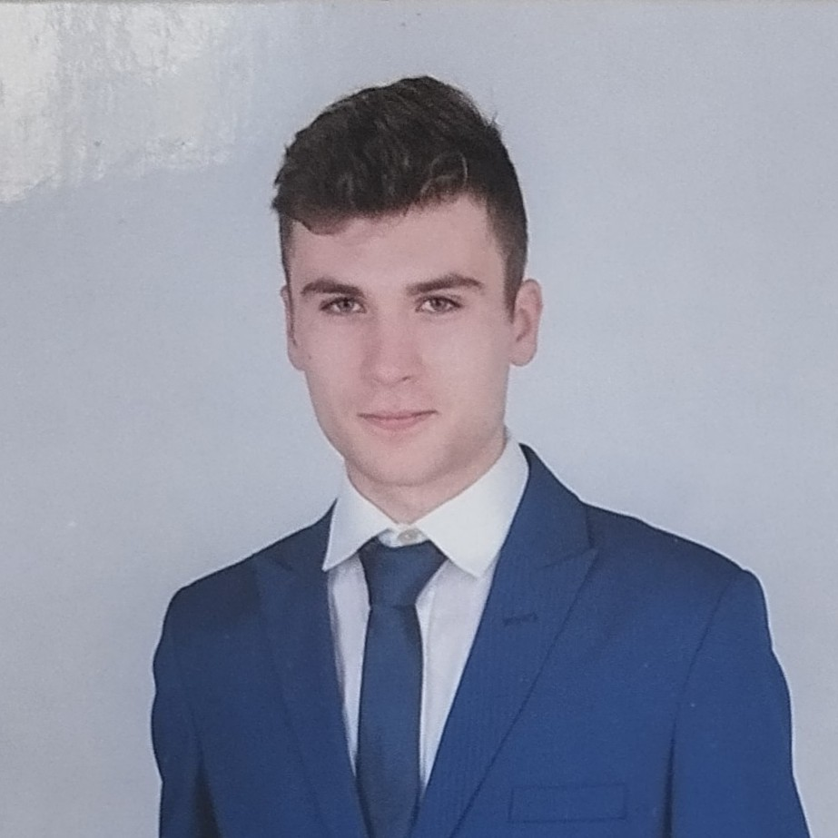

Üzemeltetés & IT Support
- Linux alapok & Windows környezet
- Rendszer- és alkalmazás setup
- Hibaelhárítás és technikai dokumentáció

Mérnökinformatikus hallgató
Ferwágner Ádám vagyok a Gábor Dénes Egyetem mérnökinformatikus hallgatója. Bár a szakmai utam elején járok, az informatikához való hozzáállásomat a mérnöki precizitás és a rendszerszintű gondolkodás határozza meg.
Önéletrajz Letöltése (PDF)Mérnökinformatikus BSc
Gazdaságinformatikus érettségi és számítógépes rendszerkarbantartó képesítés (FEOR 3142/9)
A technológia mellett a kitartásomat a sportban is fejlesztem: kerékpározás, testépítés és kispályás futball keretein belül.